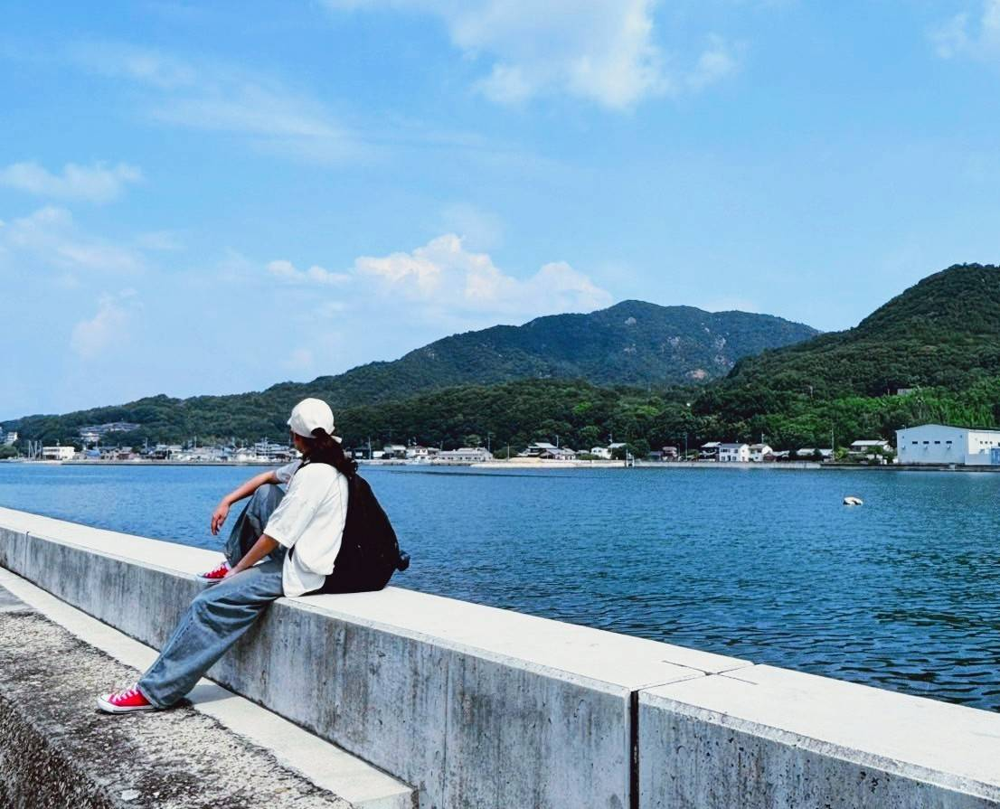
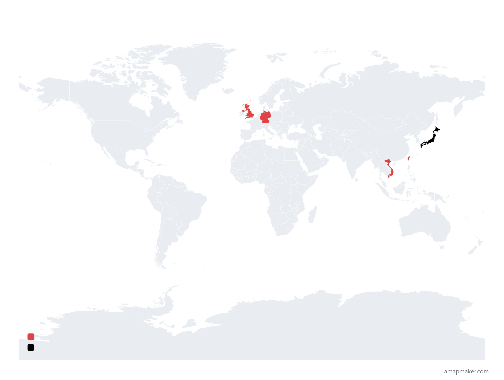
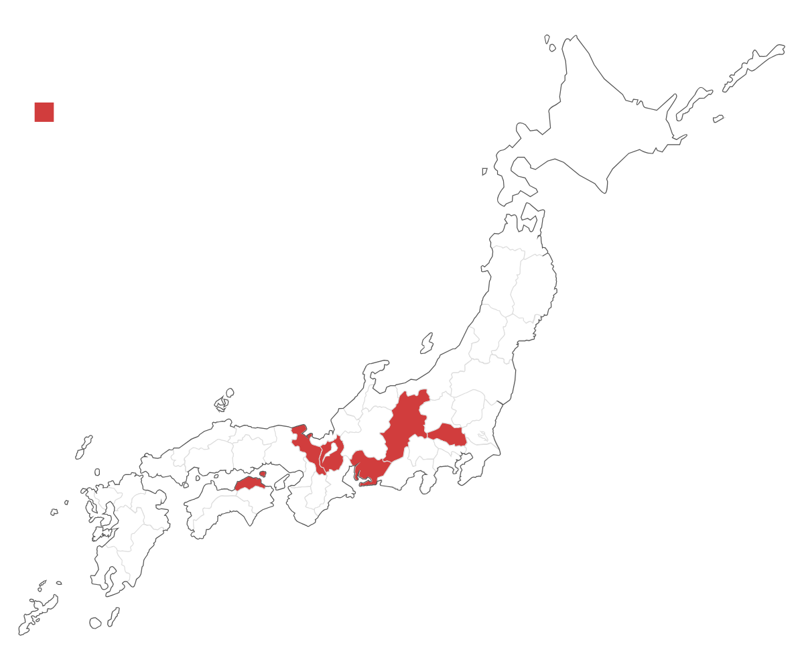

Profile
ABOUT ME

Hello! ✈
はじめまして、ミナです！
旅とグルメと、きれいな景色が好きです。
大学生のうちに、いろいろな国や地域を訪れて、
たくさんの文化や人に出会いたいと思っています。
このブログでは、旅先での思い出や感じたことを、
ノートに書き留めるように記録していきます。
My Travel
“ まだ見ぬ景色を見に行きたい ”
国内はもちろん、海外にもたくさん行って、
その土地ならではのグルメや文化、
素敵な景色を楽しむのが好きです。
これからも、いろいろな場所に出かけて
旅の記録を増やしていきたいです。
Trip Info
ひとり旅・友達との旅行
ノープランで旅行するのも好き
ご当地グルメ・スイーツ(究極の甘党です)
新しい景色を見ること！
圧倒的アウトドア派！
ヨーロッパ・北欧・南極
Travel Map
これまでに訪れた場所。まだまだ行きたいところがたくさん！
World

訪れた国・地域
Japan

訪れた県
※このマップは、本ブログに記録している旅先をまとめたものです。
これまでに訪れたすべての場所ではありません。
together!
好きなもの・ことをこのブログに綴っていきます。
よろしくお願いします！
Mina